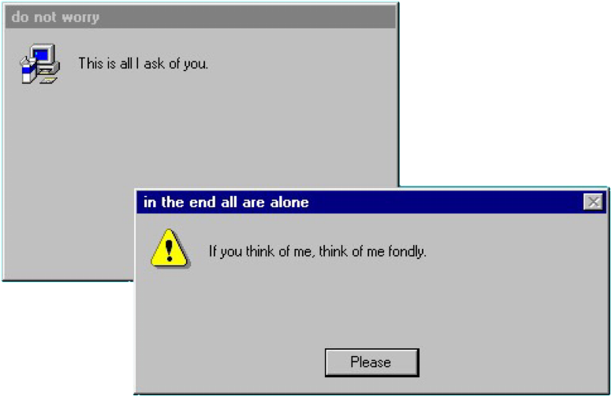
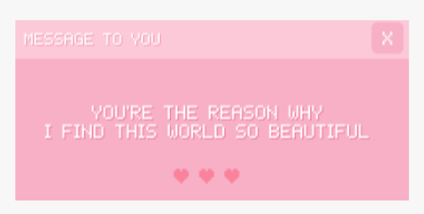

Tasnim Nahar is from New York City. She is currently a freshman at the NYU Tandon School of Engineering, majoring in Integrated Digital Media. She is interested in programming and graphic design. In her free time, she enjoys crafting and watching Korean dramas.
 